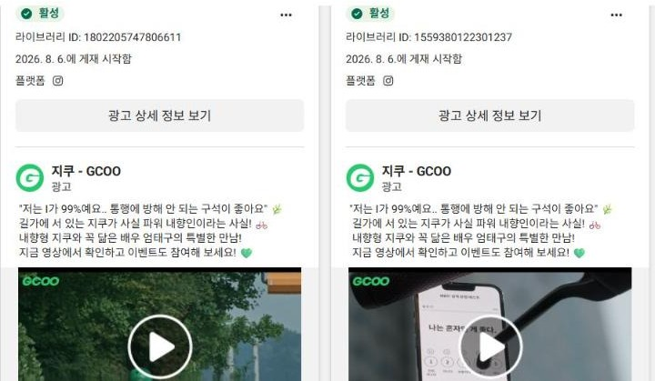
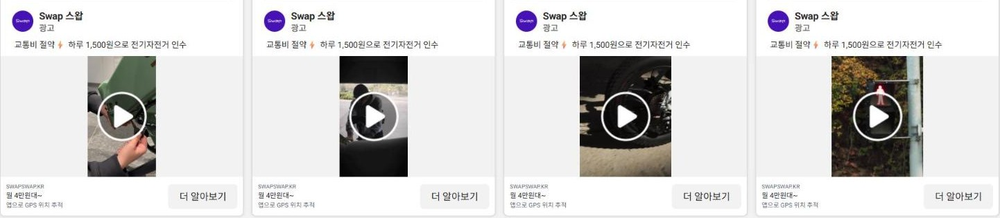
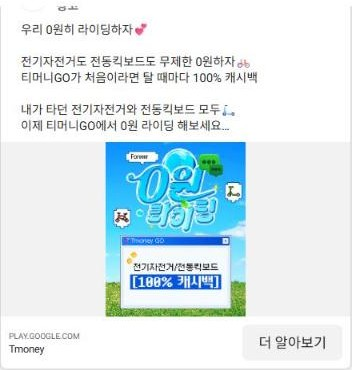

고객 리뷰 665건과 메타 광고 라이브러리를 직접 분석했습니다. 지쿠가 '처음 해 보는 퍼포먼스'에서 '성장 엔진'으로 넘어가는 구간에 브랜드와 퍼포먼스를 한 문장으로 묶는 방법을 제안합니다.
데이터 기반 마케팅의 기초
신규 가입 · 매출로 이어지는 성공 방정식 확인
성과 고도화 · 스케일업
검색 · 배너/SNS · 앱 유입 매체 전략, 예산 배분, 유효 유저 극대화
MMP와 내부 DB로 캠페인 · 채널별 리포팅, 채널 전략 제안
A/B 테스트로 검증하고 효율을 계속 올림
마케팅팀은 브랜드 · 콘텐츠 · CRM · 퍼포먼스를 함께 설계합니다. 그리고 JD는 '날씨 · 계절 같은 외부 변수에 따라 집행을 조율'하라고 합니다. 그래서 이 발표는 ① 브랜드 메시지를 전환으로 잇는 법 ② 실물 인프라와 날씨에 맞춰 돈을 쓰는 법 두 가지를 중심에 둡니다.
역 · 버스정류장 근처, 지방까지 넓게 깔려 있다는 언급이 반복됩니다.
출퇴근 · 통학 · 지각 방지 맥락이 압도적입니다.
NEW 지쿠의 승차감 · 깊은 바구니 · 거치대 칭찬이 집중됩니다.
다른 전기자전거와 비교해 주차 가능 지역이 넓다는 평가입니다.
지쿠 리뷰 안에서 언급된 횟수 (최근 12개월)
비교 기준은 다른 킥보드가 아니라 대중교통과 택시입니다. 광고 메시지도 '킥보드 중 최고'가 아니라 '버스 · 택시 대신'으로 짜야 합니다.
빗금 = 리뷰 이벤트로 보이는 달("선물 받고 싶어서 신청합니다" 등) · 빨강 = 평소 달
2026-04 환승 혜택(지쿠케어) 종료 · 요금 인상 이후 리뷰가 월 50~60건으로 늘고 평균은 1.3~1.9로 내려갔습니다.
| 리뷰 주제 | 언급 비중 | 평균 별점 |
|---|---|---|
| 가격 · 요금 | 25% | 1.82 |
| 주차 · 반납 · 견인 | 22% | 1.53 |
| 속도 · 주행감 | 16% | 4.04 |
| 전기자전거 | 13% | 3.09 |
| 앱 오류 · 결제 | 11% | 1.73 |
"환승이 없어지니 탈 이유가 없다" · "반납 구역 찾느라 돈이 더 나간다" · "10분과 30분 사이 20분 패스가 있으면 좋겠다"
평점 자체를 차별점으로 쓰지 않습니다. 이벤트 달을 빼면 평소 평점은 경쟁사와 비슷합니다.

게재 중 2건 · 2026-08-06~'지쿠'로 검색하면 면세쇼핑 지쿠 ZIKOO 광고가 대부분입니다. 구글플레이 '지쿠' 검색 2위도 ZIKOO 앱입니다. 브랜드 광고로 만든 검색 수요가 다른 회사로 샐 수 있습니다.
| 광고주 | 메타 게재 중 소재 | 메시지 |
|---|---|---|
| 티머니GO 애그리게이터 | '킥보드' 검색 9건 | 전기자전거 · 킥보드 무제한 0원, 첫 이용 100% 캐시백, 교통비 환급 |
| Swap 전기자전거 소유 | '전기자전거' 검색 80건+ | 하루 1,500원으로 전기자전거 인수, 교통비 절약, 인플루언서 |
| 더블유렌탈 | '전기자전거' 검색 36건 | 전기자전거 렌탈 |
| 스윙 · 킥고잉 · 빔 · 일레클 | 발견 못 함 | — |
| 빈칸: '버스 · 택시 대신 매일 타는 이유'를 실제 기기 위치와 함께 말하는 소재는 아무도 없습니다. → 지쿠의 자리 | ||

Swap · 하루 1,500원 (같은 메시지 소재 다수)
티머니GO · 0원 라이딩둘 다 지쿠의 핵심 고객(출퇴근 · 통학)을 노립니다. 애그리게이터는 '0원'으로 첫 탑승을 가져가고, 소유형은 '교통비 절약'으로 매일 이동을 가져갑니다.
'내향형 지쿠'의 관심이 첫 탑승으로 이어질 다리가 없음
같은 캐릭터로 출근 · 막차 · 매너 반납 상황 컷
기기가 없는 곳의 설치는 1점 리뷰가 됨
기기 밀도 · 맑은 날 · 출근 시간에 예산 집중
가격 불만 25% · 20분 패스 요청 반복
목표 = 첫 탑승 후 7일 안에 2회 · 패스 전환
티머니GO · 카카오T 경유, ZIKOO 검색 혼동
브랜드 검색 방어 · 자사앱 전용 혜택 · 채널별 LTV
한 문장: 브랜드는 "버스보다 빠르게, 택시보다 가볍게, 길을 막지 않게"를 말하고, 퍼포먼스는 이 약속이 참인 곳 · 때 · 사람에게만 돈을 씁니다.
30초 · 1분 45초
같은 캐릭터 컷
딥링크로 근처 기기 화면
최적화 이벤트
최적화 이벤트를 '설치'에서 '구매'로 올리고 브릿지 랜딩을 거치게 했습니다. 같은 계정 · 같은 기간 비교에서 CPA −51.8%, 구매 전환율 2.0배, ROAS 2.1배. 지쿠에서는 '설치'가 아니라 '첫 탑승'과 '7일 2회'를 학습시키겠습니다.
A = 브랜드 영상만 / B = 브랜드 + 컷 리타겟. 지표 = 첫 탑승 CPA, 7일 2회 비율. 2주 단위로 이긴 컷만 증액.
| 조건 | 집행 규칙 | 이유 |
|---|---|---|
| 기기 밀도 상위 지역 | 지역 타깃 예산 집중 | '어디에나 있다'가 참인 곳 |
| 기기 밀도 하위 지역 | 신규 획득 축소 | 기기 없는 설치 = 1점 리뷰 |
| 비 · 한파 · 폭염 예보 | 자동 감액 | 탈 수 없는 날의 클릭은 낭비 |
| 맑은 평일 07~09시 | 증액 | 출근 맥락 = 리뷰 핵심 장면 |
| 봄 · 가을 성수기 | 신규 획득 비중 ↑ | 이동 수요 피크 |
| 겨울 | 기존 고객 패스 유지로 이동 | 획득보다 이탈 방어 |
운영 방법: 기상 예보 + 지역별 기기 수를 매일 받아 캠페인 예산 규칙으로 반영(자동 규칙 또는 스크립트).
배터리 16만 개, 매일 5~7만 개 교환. 어디에 기기가 있는지 실시간으로 아는 회사는 광고를 기기 위치에 맞출 수 있습니다. 경쟁 광고주(애그리게이터 · 소유형)는 이 신호가 없습니다.
서비스 지역마다 랜딩을 따로 만들었습니다(범용 · 천안 · 아산 · 대세종 등 브릿지 10종). 같은 학습 풀 안에서 지역 · 소구별로 나눠 학습시켰습니다.
규칙 적용 지역 vs 미적용 지역의 첫 탑승 CPA · 기기 회전율 비교
CPI
결제 등록 이탈 체크
첫 탑승 CPA
습관 형성 비용
LTV
| 가설 | 근거 | 측정 |
|---|---|---|
| 20분 패스 | 10분 · 30분 사이 공백, 경쟁사로 이동 언급 | 패스 전환율 · 이탈률 |
| 통학 학생 패스 | 학생 · 학원 통학 리뷰 다수 | 학생 코호트 4주 잔존 |
| 환승 대체 혜택 | 04월 종료 후 평점 하락 | 이탈 고객 복귀율 |
요금 정책은 제품 결정입니다. 저는 테스트 결과를 근거로 제품팀에 제안합니다.
등급제 · 페이백 리텐션 설계로 M1 리텐션 +41%p, 180일 LTV 18.1배. 휴면 고객 D22 · D29 · D61 시퀀스로 7,997명 회수.
CRM 여정 · BigQuery 코호트 · UTM 체계를 운영하며 발송부터 전환까지 같은 기준으로 측정하고 있습니다.
"카카오T에서 뜨는 지쿠", "티머니 통합권으로 지쿠 사용". 기기는 지쿠, 데이터와 관계는 다른 회사입니다. 티머니GO는 '0원'으로 첫 탑승을 가져갑니다.
메타 '지쿠' 검색 결과 대부분과 구글플레이 '지쿠' 검색 2위가 면세쇼핑 ZIKOO입니다. 브랜드 캠페인이 만든 검색이 샐 수 있습니다.
평점은 설치 전환율에 영향을 줍니다. 이벤트로 올린 평점은 몇 달 뒤 다시 떨어졌습니다.
등급 · 포인트 · 패스 혜택을 자사앱 전용으로 명확히. 경유 이용자 대상 '앱으로 타면' 소재. 채널별 LTV를 비교해 경유 고객 전환 가치를 계산.
'지쿠' 브랜드 키워드 검색광고 확보, 앱스토어 키워드 '지쿠 킥보드 · 지쿠 전기자전거', 애플 검색광고로 상단 방어.
반납 실패 · GPS 오차 리뷰를 주간으로 집계해 제품팀과 공유. 평점 개선을 설치 전환율 개선 과제로 다룹니다.
Swap은 "하루 1,500원으로 전기자전거 인수"를 메타에서 80건 넘게 돌립니다. 그라인드는 가격만이 아니라 "충전 시간 0분"으로 이겨야 합니다.
하루 비용 + 충전 대기 시간 비교를 한 화면에
라이더 관심사 · 배달 지역
메타 · 랜딩
거점 방문
단계별 CPA
리드 → 상담 → 계약 전환을 CRM에 연결해 '리드 단가'가 아니라 '계약 단가'로 매체를 평가합니다. 거점 반경 밖 리드는 제외 규칙.
매체별 설치 · 첫 탑승 · 결제를 같은 기준으로. 탑승 · 매출 이벤트가 실제 값으로 넘어가는지 먼저 점검.
획득 채널 × 주차별 탑승 잔존 · 패스 전환 · LTV. 매체 평가를 CPI가 아니라 코호트 가치로.
도시 단위로 운영하는 구조를 활용해 광고 ON 지역 vs OFF 지역 비교. 광고가 없었어도 탔을 고객을 걸러냅니다.
구글애즈 iOS가 학습 신호 부족으로 막혀 있었습니다. 손실 비용을 데이터로 제시해 개발팀을 설득하고 ODM 연동을 진행했습니다. 연동 전후 3개월 비교: iOS 구매 유저 +227%, CPA −47%.
매출 이벤트가 MMP로 넘어가지 않은 상태에서 가치 기반 입찰(T-ROAS)을 12개월 운영했고 결국 껐습니다. 배운 점: 가치 입찰은 실제 매출 값이 이벤트로 연동된 뒤에야 성립합니다. 지쿠에서는 이것부터 점검합니다.
| JD 자격 · 우대 | 나의 근거 | 숫자 |
|---|---|---|
| 퍼포먼스 경력 5~8년 | 5년 4개월, 4개 회사. Meta · Google · TikTok · 애플 검색광고 · 네이버SA 직접 운용 | 5채널 셀프 운용 |
| 데이터로 가설 검증 · 수치 개선 | 최적화 이벤트 격상 + 브릿지 랜딩, 같은 계정 · 같은 기간 비교 | CPA −51.8% · ROAS 2.1배 |
| 에어브릿지 등 MMP | 에어브릿지 · 앱스플라이어 운영, ODM 연동을 개발팀과 추진 | iOS 구매 +227% |
| 성과를 정량으로 증명 | 전 직장(커버링) 1인 마케터로 시작해 5인 팀까지 | 월 매출 약 40배 (지수) |
| 소셜 · CRM · 퍼포먼스 연계 우대 | 등급제 · 페이백 리텐션, 휴면 회수 시퀀스. 현재 직장에서 CRM 여정 · BigQuery 운영 | M1 리텐션 +41%p |
| O2O · 하드웨어 경험 우대 | 커버링 = 지역 기반 O2O(생활 폐기물 수거). 지역별 랜딩 · 지역 타깃 운영 | 지역 브릿지 10종 |
0에서 1은 지쿠가 이미 해냈습니다. 저는 그 성공 방정식을 지역 · 날씨 · 습관 단위로 쪼개 증명하고, 이긴 조합만 키워 스케일업을 만들겠습니다. 브랜드가 말한 약속을, 퍼포먼스가 숫자로 지키겠습니다.